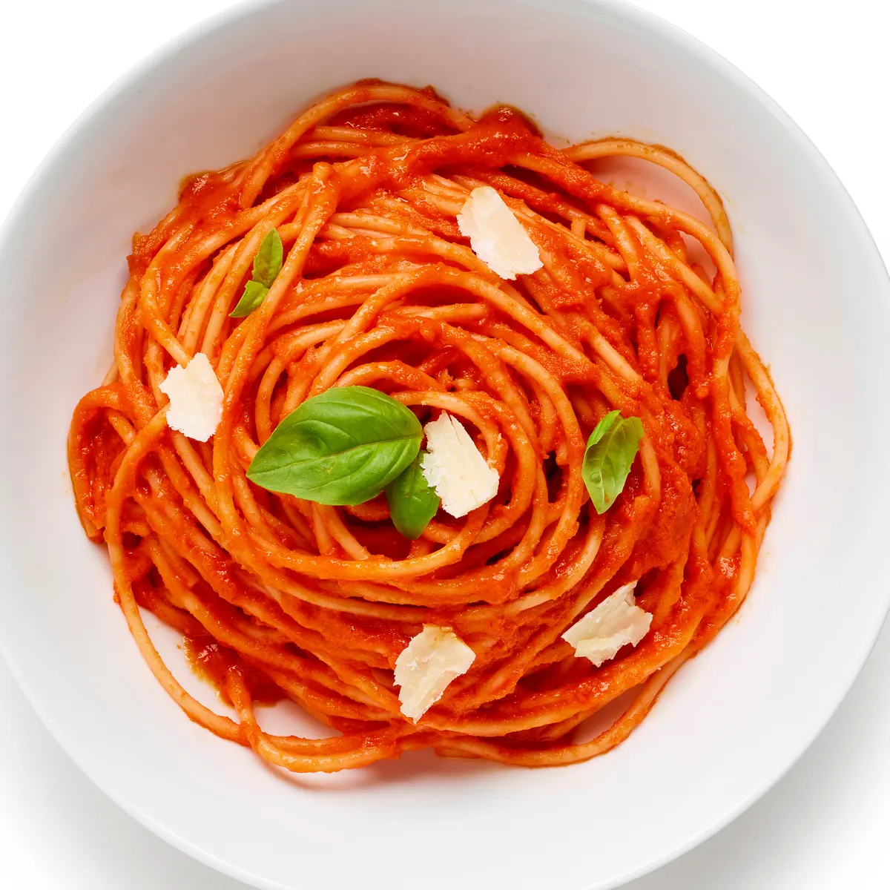
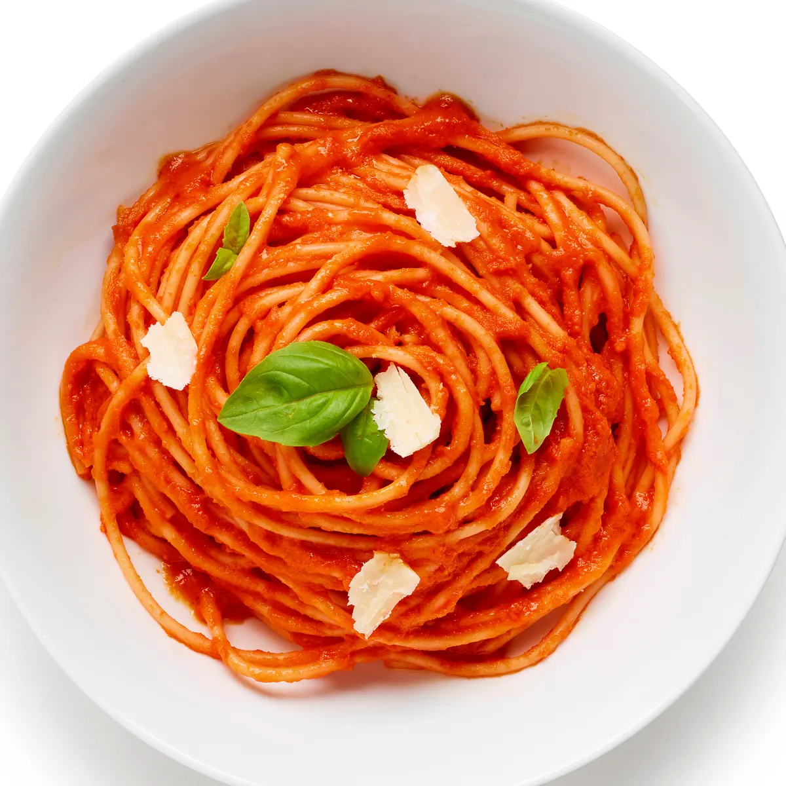
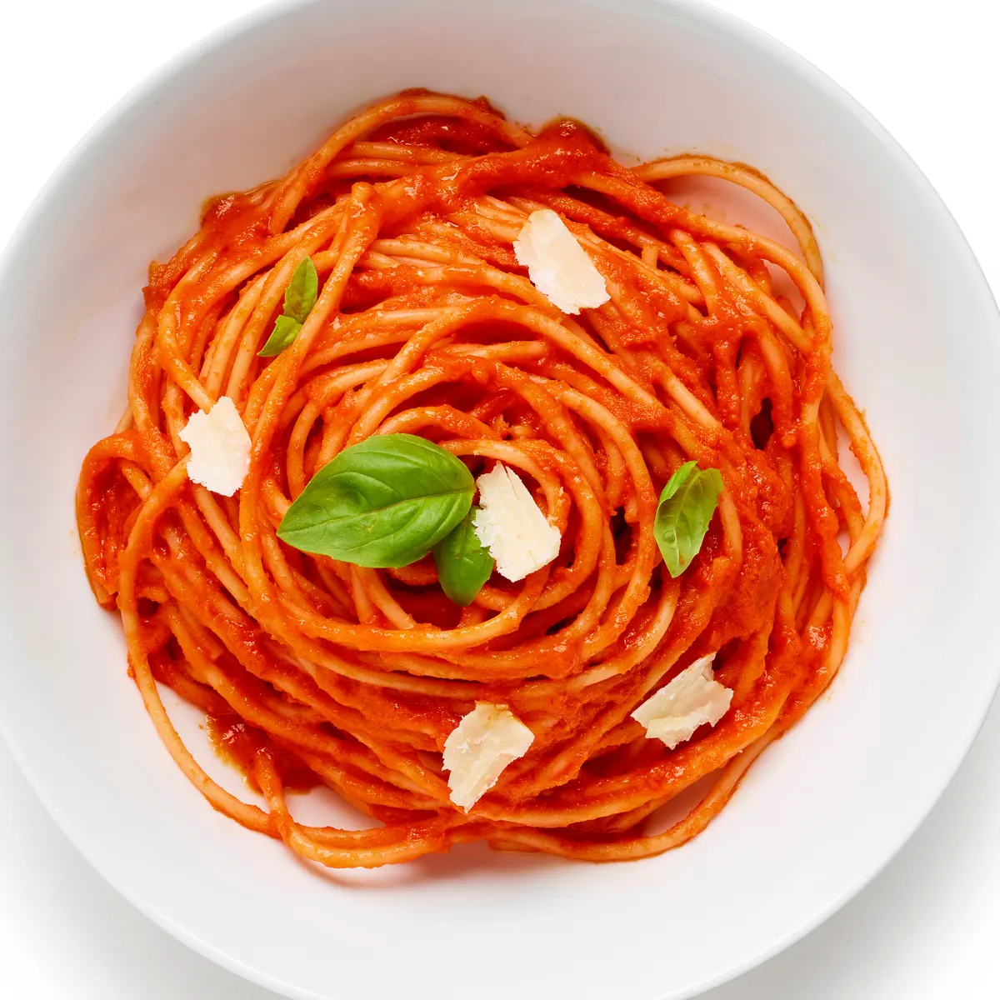

Italian Instrumental Music: Listen while reading!
Italy is a country south central of Europe that takes up a portion of a peninsula that cuts deep into the mediterranean sea.
Italy has a rich history, a vibrant culture, and some of the world's most beautiful cities. With a population of approximately 60 million people, Italy is the 23rd most populous country in the world. It's capital city, Rome, is home to over 2.8 million people, while Milan, Naples, Turin, and Palermo are other major cities.
Italy is known for it's stunning landscapes, from the snow-capped peaks of the Alps in the north to the sparkling waters of the Mediterranean in the south. The country also has a rich history, and its cultural heritage includes ancient ruins, medieval castles, and Renaissance art.
Italy has a diverse economy, with a mix of traditional and modern industries. Some of its key industries include fashion, tourism, food and wine, and manufacturing. The country is famous for its fashion brands like Gucci, Prada, and Armani, and for its luxury sports cars like Ferrari and Lamborghini.
Italy has a long tradition of producing some of the world's best food and wine. Italian cuisine is famous for its pasta, pizza, and gelato, while Italian wines like Chianti, Barolo, and Brunello di Montalcino are among the most renowned in the world.
The official language of Italy is Italian, and the country is home to a number of different regional dialects. Italian is also spoken as a second language by many people around the world.
Overall, Italy is a country with a rich cultural heritage, stunning landscapes, and a diverse economy. Its cuisine, wine, and fashion are known around the world, and it is a popular destination for tourists from all over the globe.
Milan is a city located in the northern region of Italy, known for its fashion, art, and design. It is also renowned for its cuisine, culture, and traditions, which make it a popular destination for tourists from all over the world. Let's take a closer look at the food, culture, and traditions of Milan.
Milanese cuisine is known for its simplicity and use of high-quality ingredients. Some of the most famous Milanese dishes include:
Milan is a hub of fashion and design, and the city has a vibrant art and culture scene. Some of the city's cultural highlights include:
Milan has a number of traditions that are deeply rooted in its history and culture. Some of these include:
Milan is a city that offers a unique blend of food, culture, and traditions. Its cuisine is simple yet delicious, its cultural attractions are world-renowned, and its traditions are deeply rooted in its history and culture. Whether you are interested in fashion, art, or food, Milan has something to offer for everyone.
Florence is a fashion capital of Italy and is famous for it's luxurious leather goods, handmade shoes, and designer clothing. The city is home to many famous fashion houses, including Gucci, Ferragamo. The city is also known for its street fashion and it's stylish locals, who are always impeccably dressed. Florence is a city that has something for everyone, from its delicious cuisine and unique traditions to its rich culture and fashionable style.
Florence is famous for it's traditional Tuscan cuisine, which includes dishes made from fresh ingredients such as vegetables, fruits, meats, and cheeses. Some of the famous dishes of the city include the Bistecca alla Fiorentina, a T-bone steak that is grilled to perfection and seasoned with olive oil and rosemary, Ribollita, a vegetable soup made with bread and beans, and Pappa al Pomodoro, a tomato and bread soup. Florence is also known for its fine wines, such as Chianti and Brunello di Montalcino.
Florence has a number of traditions that are deeply rooted in it's history and culture. Some of these include:
Florence, Italy has long been considered a hub for fashion and design. Known for it's exceptional craftsmanship, intensive detailing, and luxurious materials, fashion in Florence embodies the rich history and culture of the city. From its renowned leather goods to it's high-end fashion houses, Florence has established itself as a destination for fashion lovers and designers alike. Florence's fashion world is also known for it's use of high-quality materials. While Florence's fashion scene is rooted in tradition, it is not stagnant. The city's designers are constantly pushing boundaries and experimenting with new styles and techniques. From avant-garde couture to streetwear-inspired fashion, Florence is a city where creativity and innovation thrive. Some of the most famous fashion houses in Florence include:
These brands have helped put Florence on the map as a fashion capital and have inspired countless designers and fashion lovers around the world.
Overall, Florence's fashion world is a unique blend of tradition, quality, and creativity. From it's dedication to traditional techniques and high-quality materials to it's commitment to innovation and experimentation, Florence's fashion scene is truly one of a kind.
Naples, Italy, known as Napoli in Italian, is a vibrant city renowned for it's rich cuisine, diverse culture, and fascinating tourist sights.
Naples has many interesting and delicious dishes that seperate them from the rest of Italian cusine in small and unique ways!

Naples has a deep-rooted historical heritage, evident in it's ancient ruins, castles, and palaces. The city's historic center, a UNESCO World Heritage site, is a testament to its rich history, with landmarks like the Royal Palace, Castel Nuovo, and the San Carlo Theater.
Naples also has been a hub for artistic expression for centuries. The city has contributed significantly to the world of opera, with renowned composers like Bellini, Donizetti, and Rossini finding inspiration here.
Naples has a lot to offer when it comes to sight seeing, from beautiful bodies of water to rustic buildings along the coast, some of the most popular include:
Italy is home to various dishes, cultural tradtions, fashion, tourism sights and so much more. The many cities and towns located in Italy all have something in store for everyone.
The three cities Milan, Florence and Naples are so unique in the way they share many similarities and some differences. You won't just find pasta all over Italy, although it is must everyone should try. Italy is more diverse than we know it to be.
So, what are you waiting for? Book that ticket and dont for get to bring back some treats Italy offers! If this isn't enough to convince you, check out this video to get that Italian sensation flowing through you, Ciao!